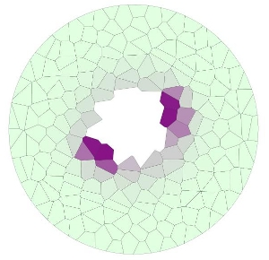
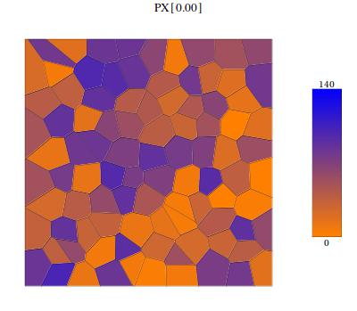

| Sample Models | Cellzilla2D Home |
 Wuschel Expression in the
Arabidopsis thaliana Shoot Apical Meristem
(xlr8r/Cellzilla2D Deterministic
Model)
Jönsson H, Heisler M, Reddy GV, Agrawal V, Gor V, Shapiro BE, Mjolsness E, Meyerowitz EM (2005) "Modeling the organization of the Wuschel domain in the shoot apical meristem," Bioinformatics 21(S1): i232-i240 (Citation) |
WT simulation (nb.zip),
(AVI movie
circular template, uses CelleratorNetwork.html Ablated center (nb.zip) (AVI movie) circular template , uses CelleratorNetwork.html WT+Ablated (nb.zip) uses StaticSimulation |
|
 Repressilator
This is an example of a tissue with 100 cells and periodic boundary conditions, with a repressilator network in each cell. One of the species is allowed to diffuse between the cells so that the individual oscillators are linked. Initial conditions are random. Elowitz MB, Leibler S (2000) A synthetic oscillatory network of transcriptional regulators. Nature. 403:335-338. Citation |
Deterministic,
Period BC (nb.zip) Period BC Movie Non-periodic BC Movie |
|